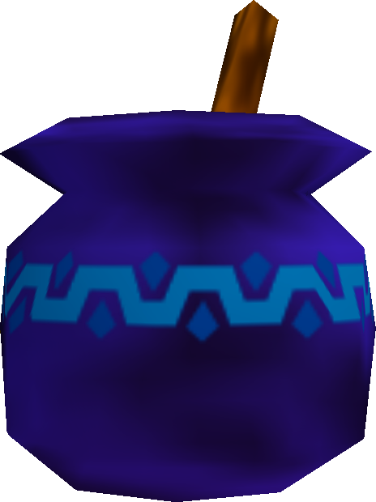
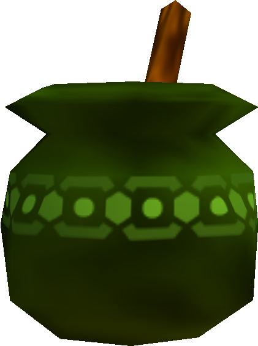
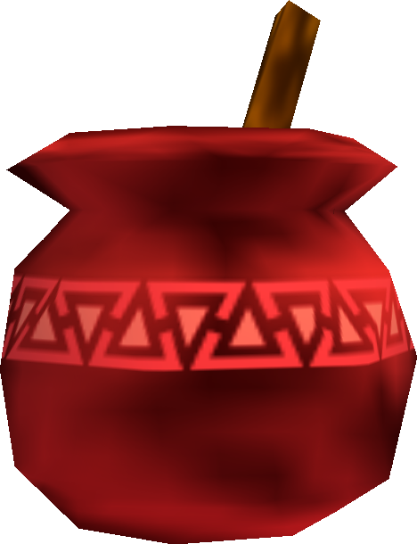
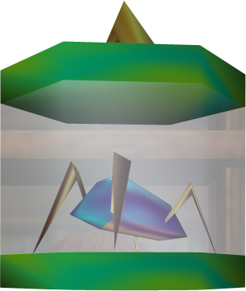
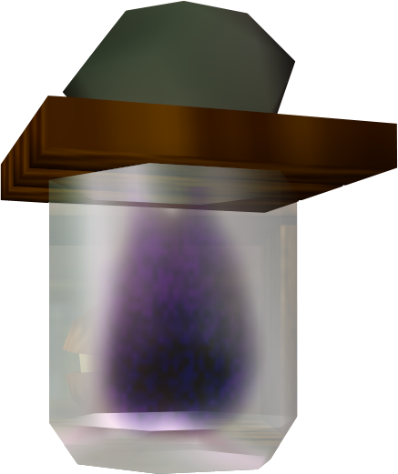
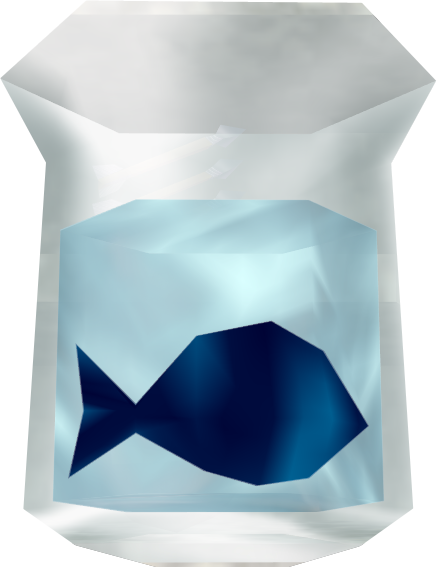
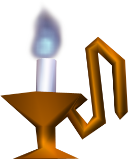
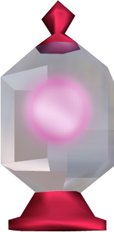
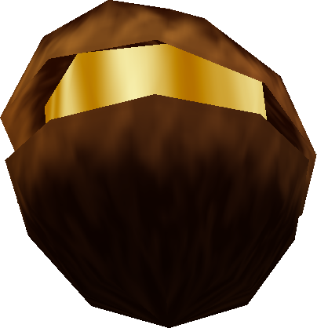

This delicious, vegan, blueberry-flavored elixir is perfect after a long day of destroying clay pots that don't belong to you.

Don't let the color scare you! This is made from the freshest kale greens and wheatgrass shoots. Contains spirulina.

Sriracha is great on food; why not put it in potions? Aged in oak casks for 1 year beneath Lake Hylia, this potion pairs wonderfully with medium-rare steak.
Bottles

Feeling hungry? Try this as a protein-rich post-workout snack — you've earned it!

This is the ghost of my mother-in-law. The price is so low, I'll actually pay you to take it.

Simply immerse yourself in this bottle and enjoy a gentle exfoliation provided by these little guys. The latest rage in Asian spa treatments!
Other

Tired of traditional romantic atmospheres? Try lighting a blue candle to provide a delightfully depressing atmosphere.

The multi-tool of bottled objects, fairies provide a light source, a listening ear, an occasional granting-of-wishes, and, in a pinch, a light meal.

Is this the ripened ovule of an enormous angiosperm? Is it a fossil of a now-extinct species of Pac-Men? Is it simply an enormous mussel, waiting for steaming? We're not sure!